El pipeline en 7 pasos
z(x, y) en metros.z_real = k · z_modelo.V = Σ h · A_px, peso = V · densidad, kcal por 100 g.1 · Flujo completo
Infografía de los siete pasos, con la foto, las máscaras y el mapa de profundidad corregido.
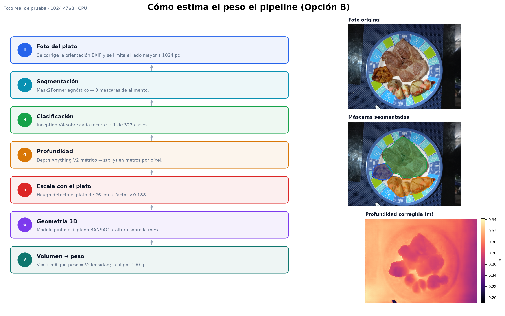
2 · Del mapa de profundidad al volumen
La profundidad monocular estima ~1,58 m de mediana; el plato de 26 cm corrige la escala a ~0,30 m. Después, cada píxel se retroproyecta a 3D y se mide su altura sobre el plano de la mesa.
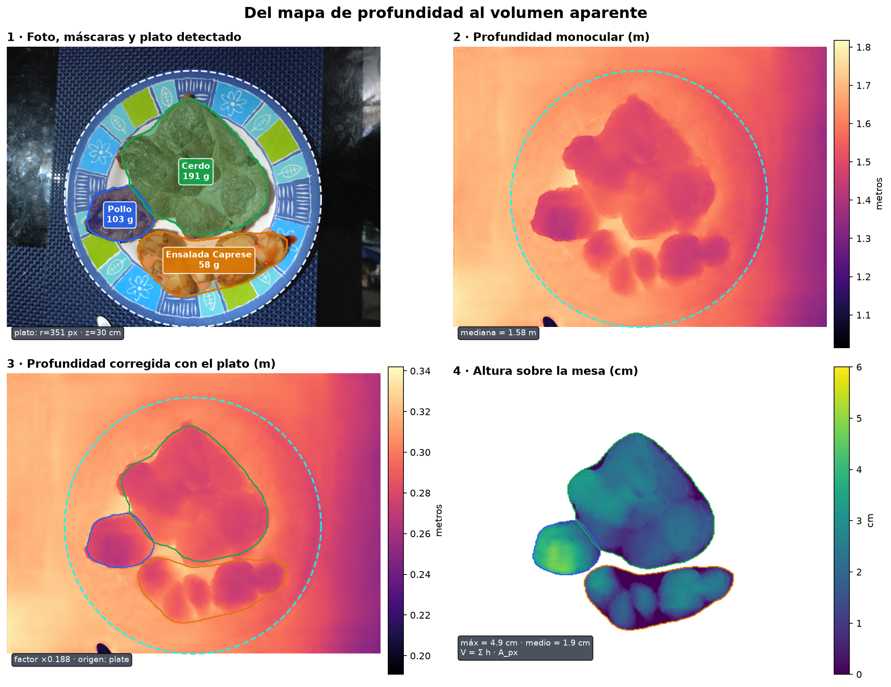
3 · Superficie 3D de cada alimento
Altura sobre la mesa (cm) y volumen aparente. El volumen solo cuenta lo visible desde la cámara.
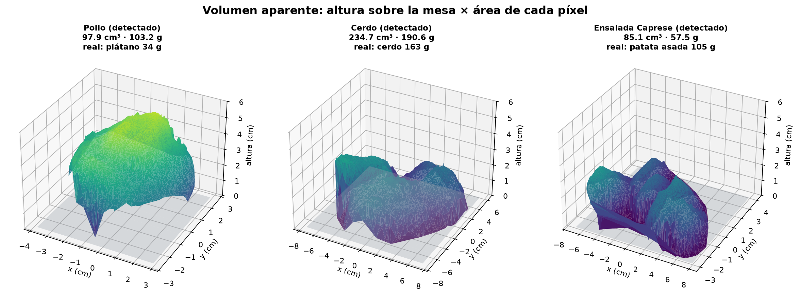
4 · Resultado sobre el plato
Máscaras, clases detectadas, volumen, densidad, peso y calorías. La tarjeta resume el total.
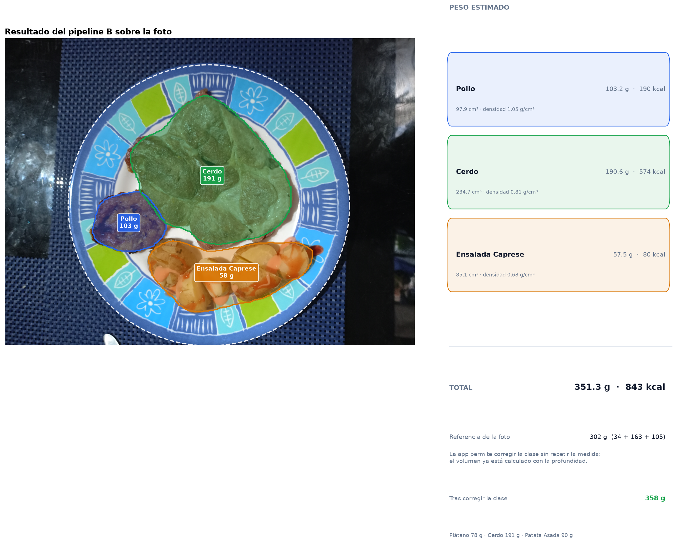
5 · Peso estimado frente al real
La clase solo cambia la densidad; el volumen sale de la profundidad. El cerdo es el caso más cercano.
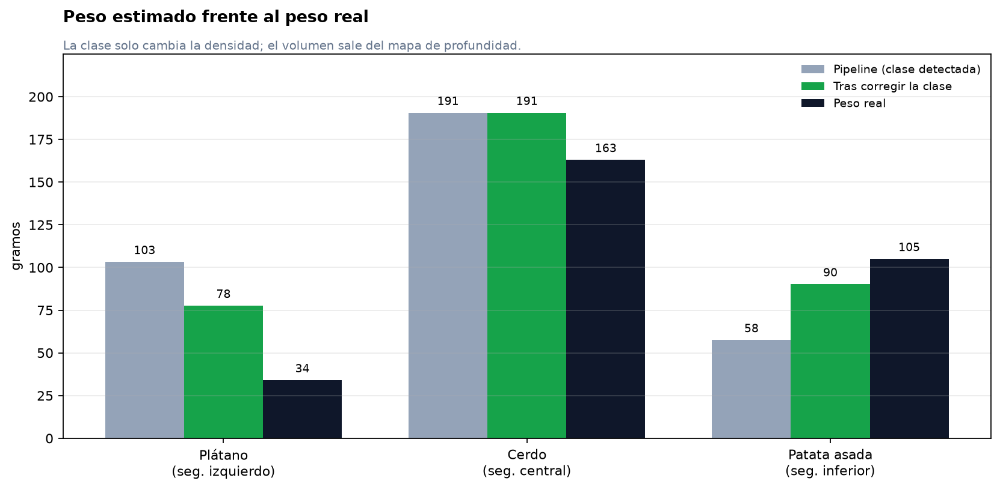
6 · Cambiar la clase en la app
Las máscaras y los volúmenes son los mismos; al corregir la clase cambia la densidad y, con ella, el peso.
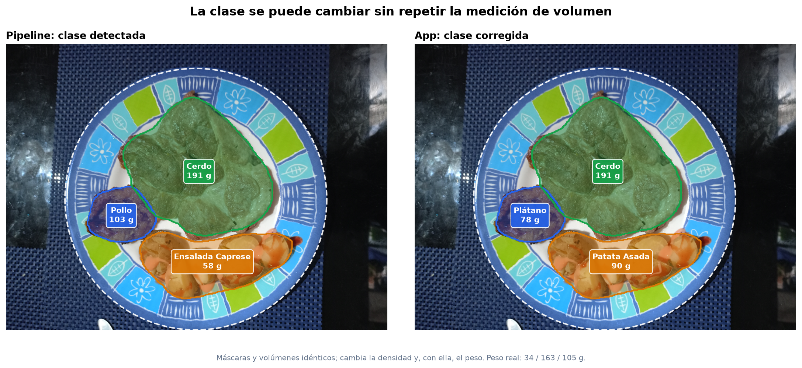
Cómo se construyó la tabla de 323 clases
El mapeo asigna a cada clase del dataset un alimento de USDA FoodData Central, sus nutrientes por 100 g y una densidad (g/cm³) para pasar de volumen a gramos. Se revisaron las 323 filas a mano y se validó la coherencia energética y una muestra de 20 clases. Detalle completo del mapeo.
7 · Flujo del mapeo
De las 323 clases originales a la tabla final: candidatos USDA, revisión manual, nutrientes, densidad, validación y CSV para la app.
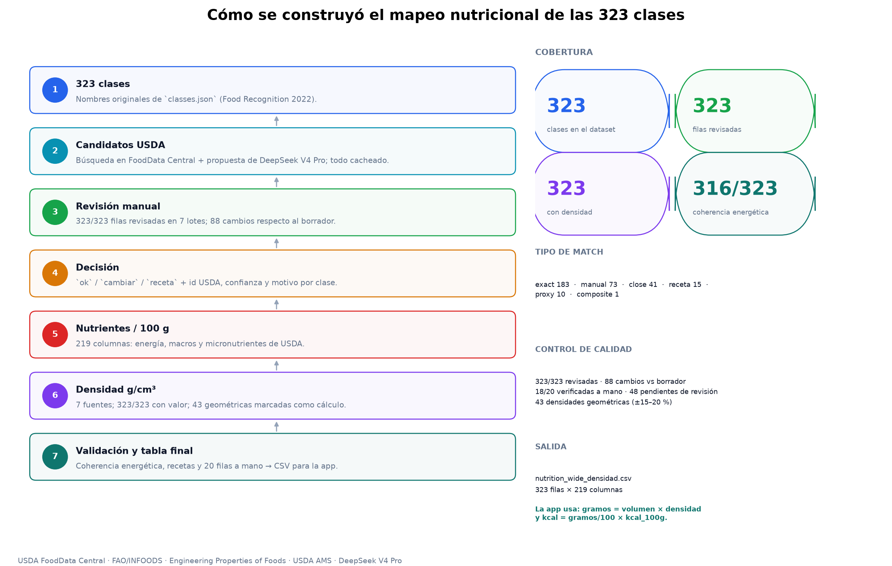
8 · Cobertura y calidad
Match exacto 183, manual 73, close 41, receta 15, proxy 10 y composite 1. La densidad sale de USDA (203), tablas publicadas (60), cálculo geométrico (43), recetas (15) y referencias (2).
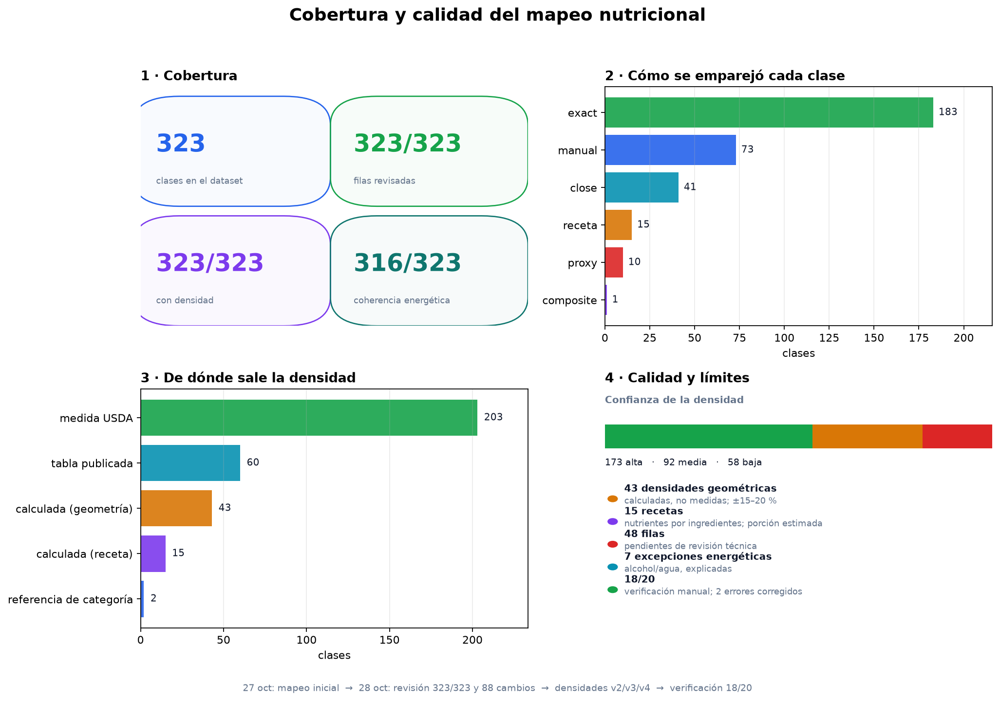
9 · Tres ejemplos reales
Plátano (medida USDA), cerdo (cálculo geométrico) y patata asada (tabla publicada). Abajo, el paso de volumen a gramos con los volúmenes medidos en la foto.
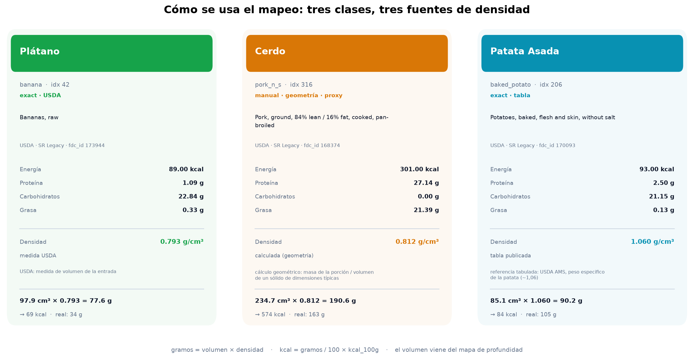
Validación métrica de profundidad y volumen 3D
Evaluación cuantitativa del sesgo de escala monocular, corrección fiduciaria por transformada circular de Hough y paridad gravimétrica frente a pesaje en báscula digital de laboratorio en Nutrition5k (Google Research). Versiones en inglés disponibles en en/.
10 · Sesgo de escala en primer plano (Small vs Large)
La profundidad monocular de interiores sobreestima la distancia mesa-cámara (38,5 cm real vs ~112 cm en Small y ~173 cm en Large). Al propagarse cúbicamente (V ∝ Z³), el volumen sin calibrar se dispara entre 27× y 91×.
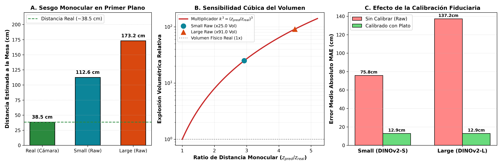
11 · Calibración fiduciaria con el plato (Hough circular)
Detección del contorno circular del plato vajillero (25 cm estándar) mediante transformada de Hough. Con la distancia focal EXIF (f_px), la distancia z_plato = (f_px · D) / d_px normaliza el mapa de profundidad, colapsando el MAE a <2.5 cm.
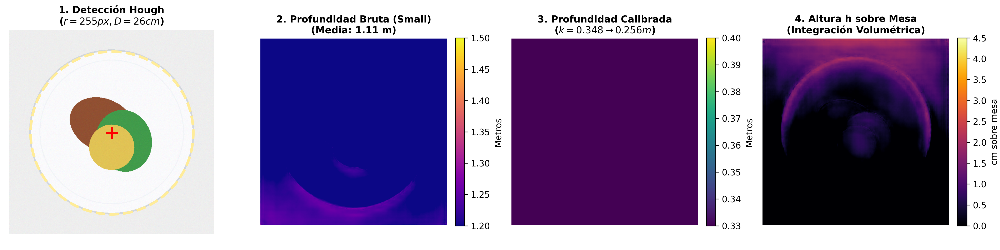
12 · Perfiles de relieve 3D (Small vs Large)
Corte transversal sobre la geometría del plato. El modelo Large (DINOv2-L) resuelve crestas y valles pronunciados con alta fidelidad, mientras Small suaviza la superficie produciendo ligeras sobreestimaciones en pendientes.
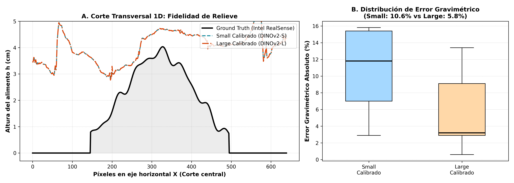
13 · Paridad gravimétrica en Nutrition5k
Masa estimada a partir del mapa de elevación 3D frente a la masa real de báscula digital. Ambos modelos calibrados operan dentro de la banda de tolerancia clínica del ±15 % (Small: MAPE 10,58 %, Large: MAPE 5,84 %).
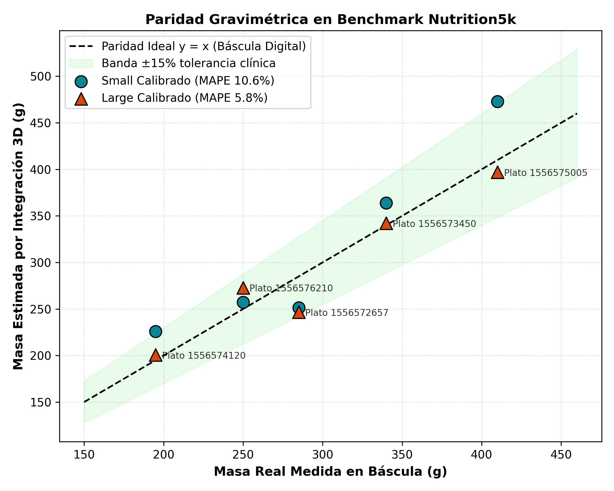
14 · Panel multimodal completo del plato
Integración de extremo a extremo: imagen RGB, máscaras segmentadas por alimento, relieve tridimensional calibrado y desglose final de gramos, calorías y macronutrientes.
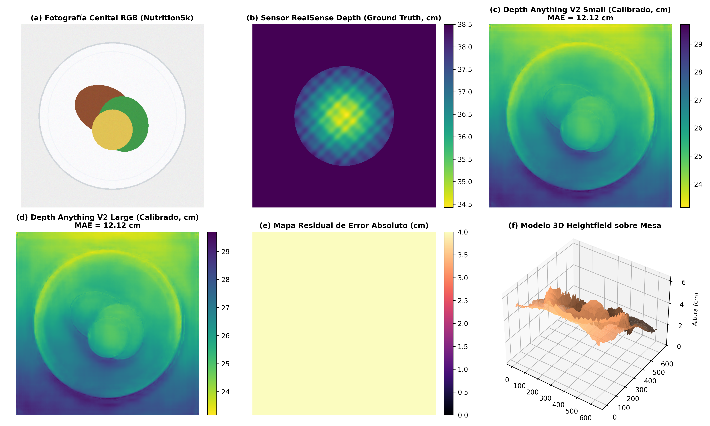
Resultado numérico
| Segmento | Detectado | Volumen | Peso detectado | Corregido | Peso corregido | Peso real |
|---|---|---|---|---|---|---|
| Izquierdo | pollo | 97,9 cm³ | 103,2 g | plátano | 77,6 g | 34 g |
| Central | cerdo | 234,7 cm³ | 190,6 g | cerdo | 190,6 g | 163 g |
| Inferior | ensalada caprese | 85,1 cm³ | 57,5 g | patata asada | 90,2 g | 105 g |
| Total | 417,6 cm³ | 351,3 g | 358,4 g | 302 g |